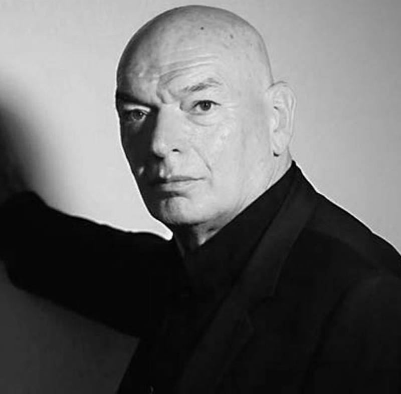

Оскар Німейєр (15 грудня 1907 — 5 грудня 2012) - бразильський архітектор, ранній представник архітектури модерн в Латинській Америці. Спроектував понад 600 будівель. Збудував нову столицю Бразилії.

Жан Нувель (12 серпня 1945 р.) - французький архітектор, який проектував свої будівлі так, щоб «створювати візуальний ландшафт», який відповідав їхньому контексту. Нагороджений Прітцкерівською премією 2008р.
Антоніo Гауді (25 червня 1852 — 10 червня 1926) - іспанський (каталонський) архітектор. Значна частина його кар’єри була присвячена незвичайній церкві Святого Сімейства (Sagrada Familia).
Донато Браманте (близько 1444 р.— 11 квітня 1514 р.) - італійський архітектор, основоположник Ренесансу.За проектом Браманте Берніні створив цей собор св. Петра. Під його керівництвом було створено низку розкішних будинків
Фредерік-Огюст Бартольді (2 квітня 1834 — 4 жовтня 1904, Париж) - французький скульптор Статуї Свободи в гавані Нью-Йорка. Статуя Свободи є найвідомішою роботою Бартольді, але його шедевром серед монументальних проектів є Бельфорський лев.